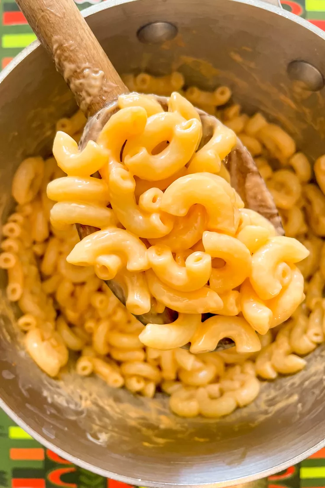

Mac & Cheese

Description
Mac and cheese is a rich and creamy dish consisting of macaroni pasta mixed with a cheesy sauce. It's particularly popular in the United States.
Ingredients
- 1 1/2 cups (170g) dry macaroni
- 3 tablespoons (20g) cheddar cheese powder, orange or white
- 1/2 teaspoon tapioca starch
- 1/4 teaspoon salt
- 3 tablespoons milk
- 1 to 2 tablespoons butter
Recipe Steps
- Boil the water:
Put a medium saucepan with 6 cups of water on the stove. Cover and bring to a boil over high heat.
-
Make the cheese sauce mix:
Meanwhile, in a small bowl, mix the cheese powder, tapioca starch (if using), and salt together with a fork or small whisk. Set aside.
- Cook the pasta:
When the water is at a full rolling boil, add the pasta. Stir once. When the water returns to a boil, reduce the heat so the water is at a robust boil but does not boil over. Cook until the pasta is done to your liking, about 8 minutes.
-
Drain the pasta in a colander. Do not rinse or shake out the excess water.
Cook the sauce, then combine with the pasta and serve:
Reduce the heat to medium-low and return the hot, empty pot to the burner. Add the butter and melt. Stir in the milk and all of the cheese powder mix. Stir until the lumps mostly disappear and the sauce is creamy and thickens a bit. Add the hot drained pasta and stir until well-coated. Serve immediately.
Refrigerate leftover macaroni and cheese in an airtight container for up to 4 days. For creamier leftovers, add a splash more water when you reheat it in the microwave. I like mine straight from the fridge.